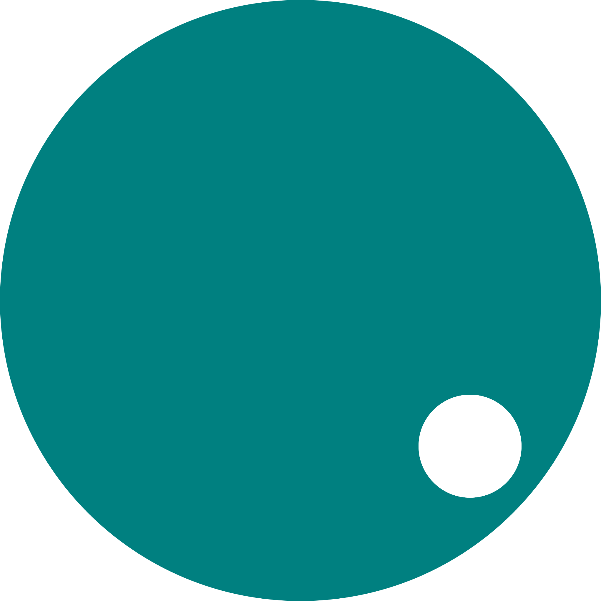

One artifact to promote
Use the same file in staging and production on matching platforms.

NioJS v0.3.0Your application, ready to ship.
Turn your TypeScript service, its imported modules, and its packaged assets into one .njs artifact. Verify it. Move it between matching environments. Run the same application you tested.
Use the same file in staging and production on matching platforms.
The prepared module graph travels with your application.
Inspect its metadata and check a trusted publisher before execution.
A service usually starts as a collection of source files, dependencies, and assets. A capsule gives that collection a single deployment identity. The build machine resolves and prepares the application; the deployment machine runs the resulting file.
This makes a release easy to pass between a developer, a CI pipeline, a staging service, and production. You can store it in an artifact registry, attach it to a release, copy it to a server, and retain it for rollback. The capsule does not need your source directory or dependency download cache to execute.
The practical advantage is control over what reaches production. Your deployment uses the prepared dependency graph rather than resolving module URLs again. A publisher signature can bind the application, graph metadata, assets, and declared network requirements to a key your deployment trusts.
.njs capsule needs a compatible NioJS runtime. Build and run it with the same runtime version, operating system, and CPU architecture. A standalone executable includes that runtime; it still retains the platform's system-library requirements.Capsule v2 is a binary archive identified by the NJSB header. It records the application entrypoint and the modules needed to execute it. Use the CLI to inspect it; the binary layout is an implementation format, not a frozen interchange specification.
| Component | What it carries | Why it matters |
|---|---|---|
| Application modules | Precompiled QuickJS bytecode for prepared TypeScript and JavaScript. | Deployment does not need to transpile or parse those application sources. |
| Dependency edges | The recorded imports and their resolved module identifiers. | The application graph can execute without downloading those modules again. |
| Assets | Raw bytes, media types, and integrity digests for explicitly packaged files. | Serve a document, image, or configuration resource through asset(). |
| Source maps | Mappings and original source content used for diagnostics. | Errors can point back to your TypeScript. The capsule is not a source-confidentiality boundary. |
| Native imports | Embedded shared libraries and generated bindings when the application imports supported native sources. | The deployment machine does not need the compiler that built those libraries. |
| Release metadata | Format and runtime compatibility, object digests, and declared network requirements. | NioJS checks compatibility and integrity before executing the application. |
| Publisher identity | An optional Ed25519 signature and public key. | A separately trusted public key establishes which publisher signed the release. |
External databases, outbound services, Python installations, and system shared libraries remain deployment dependencies. Package assets explicitly with --asset; a build does not automatically copy every file in your project.
--public-key additionally requires your trusted publisher.Capsules move preparation work to the build stage. They do not remove all startup work: workers still initialize, modules execute, routes register, and eligible /** @native */ numeric plans compile to machine code at worker startup. Measure startup time for your actual service rather than assuming a universal latency.
Start with a service that returns JSON and serves a packaged text file. Save this as app.ts:
import { get, asset } from 'nio.js';
get('/', () => ({ service: 'capsule-demo', status: 'ready' }));
get('/hello', asset('hello.txt'));Create the asset, build the application, and inspect the resulting file:
mkdir -p assets
printf 'Hello from a packaged asset.\n' > assets/hello.txt
nio-js build app.ts --asset hello.txt=assets/hello.txt -o dist/app.njs
nio-js inspect dist/app.njs
nio-js verify dist/app.njsRun the artifact and check both routes:
nio-js run dist/app.njs --port 3000 --workers 1
# In a second terminal:
curl http://127.0.0.1:3000/
curl http://127.0.0.1:3000/helloThe first response is {"service":"capsule-demo","status":"ready"}. The second returns the text you packaged. Copy dist/app.njs to a separate directory with the matching runtime and repeat the run command. The service no longer needs app.ts, the asset source file, or the build cache.
This first capsule is unsigned. Add publisher signing when you need the deployment to enforce the identity of the release producer.
NioJS can prepare supported ESM dependencies from HTTPS URLs. The first successful preparation creates nio.lock next to the entrypoint. Commit that file so subsequent builds can check the pinned remote resolutions and source digests.
# Subsequent builds require the existing lockfile.
nio-js build app.ts --frozen --asset hello.txt=assets/hello.txt -o dist/app.njs
# With remote dependencies already available in the verified cache:
nio-js build app.ts --offline --frozen --asset hello.txt=assets/hello.txt -o dist/app.njs--frozen prevents the build from changing the lockfile. --offline prevents remote module downloads and requires those sources to be cached already. Intentional dependency changes use --update during preparation, followed by review of the resulting lockfile.
At execution time, the capsule already carries its prepared modules. An offline deployment can still have application-level network dependencies: packaging imports and allowing outbound requests are separate concerns. Read the dependency and lockfile guide for import policy and cache behavior.
The left side of --asset NAME=PATH is the name your application uses; the right side is a build-machine file. Repeat the flag to package additional resources:
nio-js build app.ts -o dist/app.njs \
--asset hello.txt=assets/hello.txt \
--asset logo.svg=assets/logo.svgasset('logo.svg') returns a Blob with the packaged bytes and media type. You can register that Blob as a constant route. It does not read the original file on the deployment machine.
Local Rust, Zig, C, and Go imports compile into shared libraries during preparation. Their library bytes are embedded through the generated module bindings. Numeric exports support zero to four double arguments and a double result; Go also supports an owned, zero-argument C string result with an explicit release function.
| Application code | Build machine | Deployment machine |
|---|---|---|
| TypeScript / JavaScript | NioJS prepares and compiles the modules. | A matching NioJS runtime, or its standalone executable. |
| Rust / Zig / C / Go imports | The corresponding compiler; Go needs cgo and a C compiler. C uses cc or CC. | Matching native target, required system libraries, and a temporary directory that permits loading shared libraries. |
| Python imports | NioJS packages the Python module source through its bindings. | A runtime built with --features python, a compatible Python shared library, and any imported Python packages. |
/** @native */ | NioJS prepares eligible optimization plans. | The runtime compiles numeric plans at worker startup; unsupported calls retain JavaScript behavior. |
Native libraries execute with process privileges. JavaScript heap, network, and timeout budgets do not sandbox their operations. Explore the hybrid engine, native acceleration, and Python guide for the supported interfaces.
Object digests detect changed content, but digests alone do not establish who produced an application. Signing connects the capsule payload to an Ed25519 key. Your deployment must trust that key independently of the capsule it receives.
Generate a key pair on the build machine. This example uses an explicit output path suitable for a development or CI workflow:
nio-js keys gen --email releases@example.com --output publisher.key
nio-js build app.ts -o dist/app.njs \
--asset hello.txt=assets/hello.txt \
--sign-key publisher.keyThe command writes a private publisher.key and a public publisher.pub. Existing key files are not overwritten. Keep the private key with your release producer; give deployment systems only the trusted public key.
# Check the artifact against a separately trusted public key.
nio-js verify dist/app.njs --public-key publisher.pub
# Check that same requirement immediately before execution.
nio-js run dist/app.njs --public-key publisher.pub --port 3000--public-key rejects unsigned capsules and capsules signed by another key. Without it, verify checks any attached signature using the public key carried inside the file; that checks consistency, but does not establish your trust in the publisher.
You can also use a named local identity: keys gen --email releases@example.com stores keys under your home directory's .nio/keys; build --sign releases@example.com selects that private key. inspect reports whether a capsule is signed and its publisher-key fingerprint.
Choose whether your deployment manages the NioJS runtime separately or carries it inside the executable. Both formats use the prepared capsule.
Use this when your servers or container images already provide the pinned NioJS runtime. The release artifact contains the application; runtime installation remains a separate deployment concern.
nio-js build app.ts -o dist/app.njs --asset hello.txt=assets/hello.txt
nio-js run dist/app.njs --port 8080 --workers 4app.njsmatching NioJS runtimerunning service
Use this when the receiving machine should not need an installed NioJS CLI. The build embeds the capsule into the current Rust/Tokio runtime executable.
nio-js build app.ts -o dist/app.njs \
--asset hello.txt=assets/hello.txt --standalone dist/my-app
./dist/my-app --port 8080 --workers 4On Windows, choose an .exe output name. The executable still depends on its target OS, architecture, and system libraries. Python-enabled builds retain their Python library requirements.
my-appruntime + embedded capsule
Signing works with either build. A signed standalone application can require its trusted key at startup with ./dist/my-app --public-key publisher.pub --port 8080. Projects created by nio-js init include host/nio.toml, which also makes a build produce my-app (or my-app.exe). The supported host is Rust/Tokio.
A practical release workflow separates building an application from operating it. Prepare it in CI, test the resulting capsule in staging, and promote that artifact to production on a matching target. Do not rebuild it merely because it is moving to the next environment.
# Build from reviewed, locked dependency inputs.
nio-js build app.ts --frozen -o dist/app.njs \
--asset hello.txt=assets/hello.txt --sign-key publisher.key
# Inspect and verify the release before promotion.
nio-js inspect dist/app.njs
nio-js verify dist/app.njs --public-key publisher.pub
# Run the promoted artifact with the target runtime.
nio-js run dist/app.njs --public-key publisher.pub \
--host 127.0.0.1 --port 8080 --workers 4Use a process supervisor for restart and shutdown, and put a TLS reverse proxy in front of a public HTTP service. Check an application health route after switching releases. Retain the previous capsule and its matching runtime so rollback means switching back to a known release.
A capsule can record required outbound hosts. Deployment still has to grant those hosts explicitly; the capsule cannot grant itself network access.
nio-js build app.ts -o dist/app.njs --require-net api.example.com
nio-js run dist/app.njs --allow-net api.example.com --port 8080This declaration is separate from the imported module graph. Native libraries and Python operations have process privileges and can access host resources outside the JavaScript fetch policy.
| Requirement | Current behavior |
|---|---|
| Runtime and target | The runtime version, OS, and CPU architecture must match the build. Build a separate artifact for each deployment target. |
| Capsule size | At most 64 MiB for the binary capsule. Module objects and packaged assets are individually limited to 16 MiB; the source graph has an additional aggregate preparation budget. |
| Graph and assets | Up to 256 modules and 256 explicitly packaged assets. |
| Older capsules | Legacy JSON capsules must be rebuilt from source for Capsule v2. Existing supported dependency lockfiles remain usable. |
| Secrets and source | Source maps include original source content. Signing does not encrypt the capsule. Keep secrets out of source and packaged assets. |
| External resources | Databases, application services, system libraries, and Python packages are not automatically bundled. |
Run capsules from sources you trust. QuickJS bytecode and embedded native libraries are executable code; object hashing is not a substitute for publisher trust or operating-system isolation. This preview runtime is not a hardened sandbox for hostile applications.
A .njs file needs the compatible NioJS runtime. A --standalone build includes that runtime in the executable. Both retain relevant platform and shared-library requirements.
The current format checks the runtime version, OS, and CPU architecture. Build and test a separate capsule or executable for each target. “Single file” describes the deployment artifact, not universal binary compatibility.
Executing a capsule does not need to download its prepared application modules. Your application may still make outbound requests, and external services or Python packages remain separate requirements.
No. Use --sign or --sign-key at build time. Use a separately trusted public key with verify, run, or exec to enforce publisher identity.
nio-js inspect shows the entrypoint, module identifiers, assets, required network hosts, runtime compatibility, signature state, publisher fingerprint, and artifact digest. Rebuild to change the application. Capsule contents are not encrypted, and the source maps contain original source content.
No fixed startup latency is guaranteed. Precompiled application modules avoid source parsing, but worker initialization, module evaluation, native bindings, Python initialization, and application logic still take time. Benchmark the artifact you intend to deploy.
Start with inspect and verify. Check the expected runtime and target, trusted publisher key, network grants, and required shared libraries. Keep source maps for mapped diagnostics. An “invalid capsule magic” error on a legacy JSON file means you need to rebuild it.
Start with a small service. Package one asset. Run the capsule from a fresh directory. Then add your release key and promote the exact file you tested.